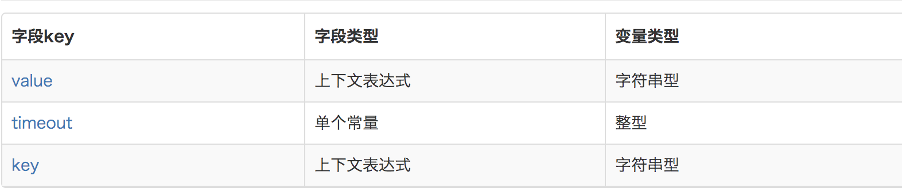
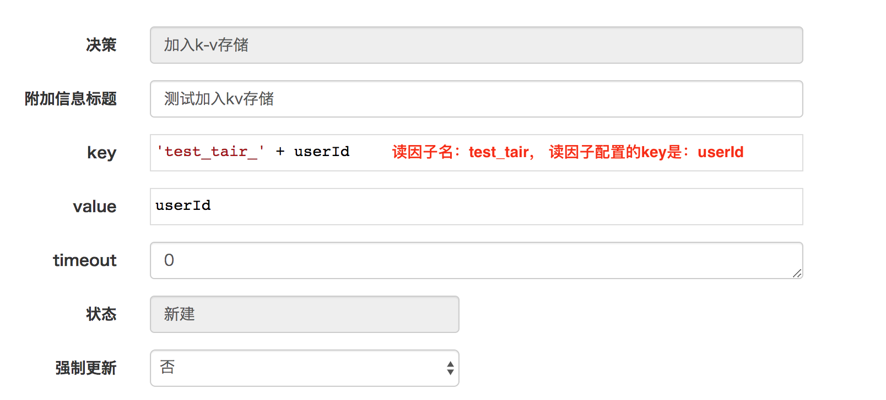
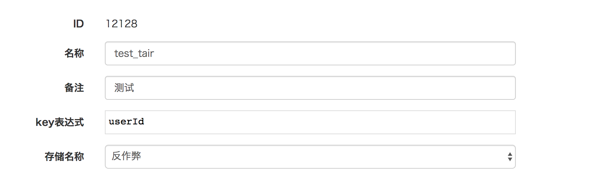
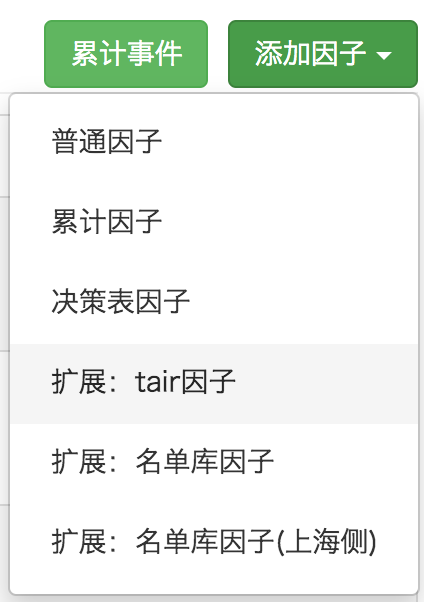
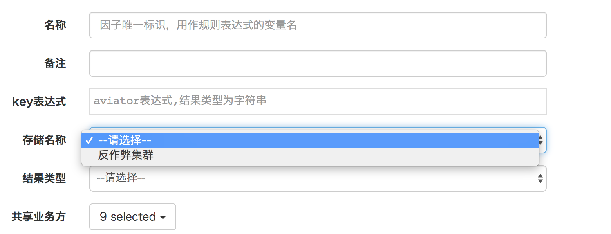

说明：Tair因子使用手册
一、背景
解决：业务已有了一些kv対，在规则执行时，期望获取这些key对应的value值
适用场景-例如：（1）业务洗出一批安卓设备ssid与厂商的映射信息，规则执行时期望通过ssid获取设备厂商；
二、操作说明
1、写数据
使用Tair因子前需要先将数据按照指定的格式，写入指定的存储
写入方式
1.风控请求未过Tatooine，业务自行洗数据写入指定存储，存储信息由@Tatooine指定，并提前与@Zeus沟通待写入数据的细节。
2.风控请求通过Tatooine，配置写入规则，在决策附加信息中，配置写入的数据和存储，由Tatooine完成数据写入，具体配置方式如下：
-
添加附加信息模板：
含义
key
存储中的key字段，格式为读因子名+"_"+读因子key
value
存储的value字段
timeout
kv在存储中的过期时间，0代表不过期
模板配置如下图：

- 配置一个决策附加信息写入kv数据，对应的读因子是test_tair

写入格式
不同业务的tair因子底层使用同一存储，为了保证键值的唯一性，写入的key格式为："因子名_key值"，
如图Tair因子的名称为test_tair，key值表达式为userId，对于userid= 69279227的用户，写入缓存的键值为"test_tair_69279227"。

1.Key值不能超过1000字符
2.Value值大小不能超过 100K（100K怎么计算，详情👇）
1个Byte（字节）存储一个西字字符或标点符号或阿拉伯数字。
2个Byte（字节）存储一个汉字及相应标点符号。
100KByte=（100*1024）=102400个西文。
100KByte=（100*1024）/2=51200个汉字
2、读数据
【Tair因子配置】
首页-->规则--> 因子


key表达式：aviator表达式，表达式配置支持参数和表达式因子；
存储名称：当前只有一个集群，自行写数据的业务请先与Zeus确认数据存储名称，通过Tatooine写入的数据请与Tatooine确认存储名称；
结果类型：请确保写入的数据类型保持一致；
三、最佳实践经验
离线写tair：Hive2Tair-Zeus的tair因子应用